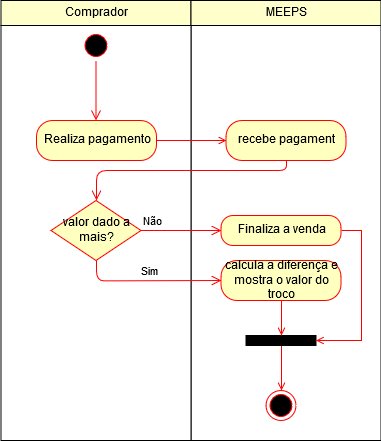

Verficar Troco- UC011
O sistema deve avaliar o valor pago e devolver a diferença do preço
Ator:
Pré-condições
- O usuário deve estar logado
- O sistema deve ter produtos cadastrados
- O deve haver produtos no carrinho
Fluxo Principal

Pós-condições
- O valor de troco deve ser calculado ou devolvido